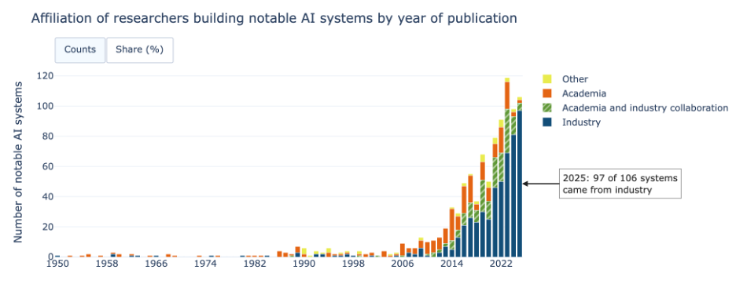
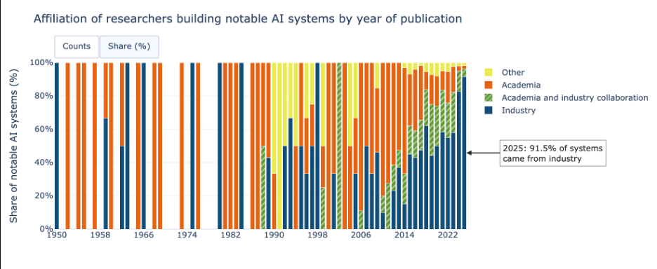
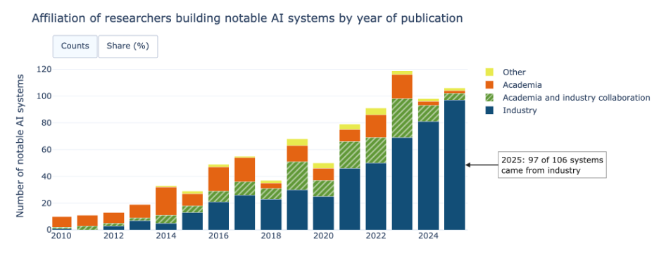
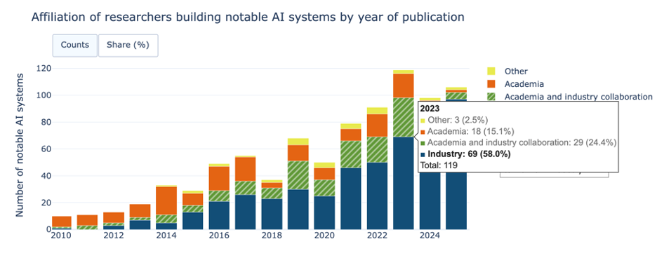
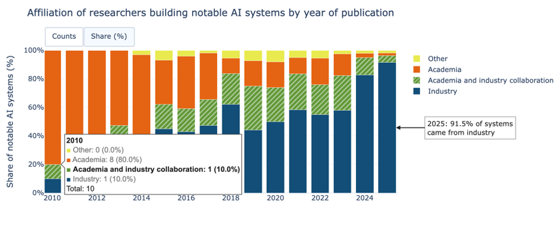

For Module 9 I took my stacked bar chart of the affiliation of researchers building notable AI systems and made it interactive with two features. A detailed tooltip and a Counts / Share (%) toggle. Both are built in Plotly and hosted on Posit Connect Cloud.
The Visualisation
Interactive Features
Detailed tooltip. Hovering a bar shows more detail on demand, which is the Abstract/Elaborate category. It lets the viewer read the exact number and share for every affiliation in that year, plus the year's total.
Counts / Share (%) toggle. Two clearly labelled buttons change the encoding of the y axis between the number of systems and each affiliation's proportion of the year.
Interactive Views





Data Card
| Title | Affiliation of researchers building notable AI systems by year of publication |
|---|---|
| Summary | Stacked bar charts showing notable AI systems developed each year from 1950 to 2025. Broken down according to affiliation of researchers. The number of systems is growing exponentially. 34 in the entire 1990s, 324 in the 2010s, and 543 from 2020 till 2025. Viewers can use a tooltip to see precise numbers and percentages and switch between numbers and 100% scale. |
| Data Sources |
|
| Mapping |
|
| Important Notes |
|
| Access |
Table: download directly from Our World in Data chart page https://ourworldindata.org/grapher/affiliation-researchers-building-artificial-intelligence-systems-all?tab=table CSV file: download the csv file used to create the visualization. (Our World in Data) https://ourworldindata.org/grapher/affiliation-researchers-building-artificial-intelligence-systems-all.zip?v=1&csvType=full&useColumnShortNames=false |
References
- Epoch AI. (2026, August). Data on AI models [Data set].
https://epoch.ai/data/ai-models?view=graph&tab=notable#explore-the-data - Our World in Data. (2025, March 12). Affiliation of research teams building notable AI systems by year of publication. Our World in Data.
https://ourworldindata.org/grapher/affiliation-researchers-building-artificial-intelligence-systems-all